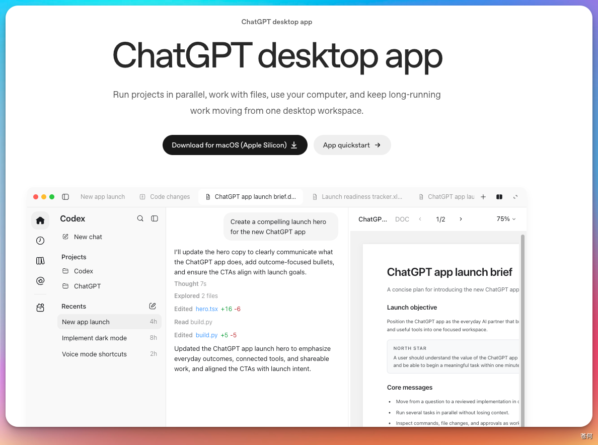
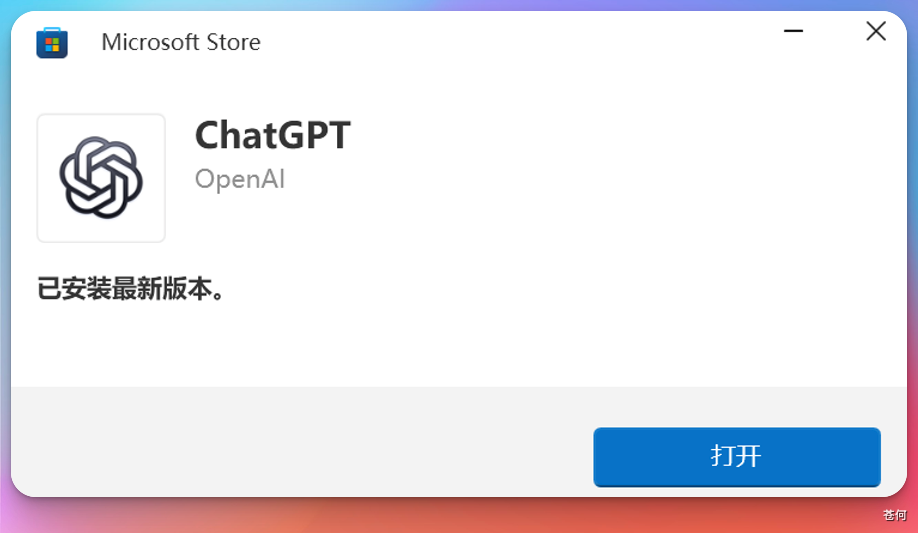
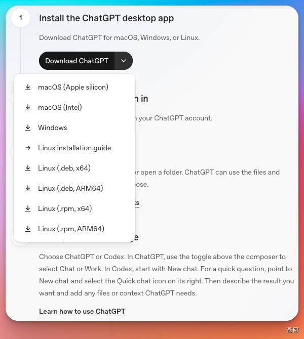

本教程介绍的是 OpenAI 官方推出的电脑客户端，不是手机 App。官方文档现在统称为 ChatGPT desktop app，进入应用后可以选择 Codex，用来管理本地项目、发起任务，以及使用 Skills 和 Automations。该应用支持 macOS、Windows 和 Linux，下面将分别介绍安装方法。其中 Linux 版目前仍处于预览阶段。
下载#
打开 OpenAI 桌面 App 官方文档，页面会提供 macOS、Windows 和 Linux 的官方下载入口。
macOS：

点击「Download for macOS」下载 .dmg 安装包。
- 打开下载好的
.dmg文件 - 把 Codex 图标拖进「Applications（应用程序）」文件夹
- 首次启动时，如果 macOS 弹出「无法验证开发者」，请先确认安装包来自 OpenAI 官方下载地址；来源不明时不要强制打开
Windows：
Windows 用户点击对应的下载按钮，下载完成后运行安装程序，按提示完成安装。

如果点击后微软商店打不开、白屏，或一直卡在「获取」/「正在安装」，可以考虑下面的离线安装方式。核心思路是不走微软商店客户端，直接从微软服务器解析 Codex 安装包，再手动安装。
- 打开 store.rg-adguard.net，左侧选择
ProductId，输入 Codex 的产品 ID：9PLM9XGG6VKS，右侧选择RP，点击对勾解析。 - 在结果里找到文件名包含
OpenAI.Codex的最新安装包。普通 Windows 电脑通常选x64架构，后缀可能是.msix、.msixbundle或.appxbundle。 - 如果浏览器直接点击无法下载，可以右键复制安装包链接，粘贴到浏览器地址栏下载，或在 PowerShell 里用
curl.exe -L "安装包链接" -o Codex.msix下载。 - 下载完成后双击安装包。如果双击无法安装，在安装包所在目录打开 PowerShell，再执行：
Add-AppxPackage -Path ".\Codex.msix"Linux：

Linux 版目前处于预览阶段，官方支持 Ubuntu 24.04/26.04 LTS、Debian 13、Fedora 43/44 和持续更新的 Arch Linux，同时提供 x64 和 ARM64 版本。请先打开 Linux 官方安装文档，按系统和处理器架构下载对应的安装包。
- Ubuntu 或 Debian：下载
.deb安装包，然后执行sudo apt install ./安装包文件名.deb - Fedora：下载
.rpm安装包，然后执行sudo dnf install ./安装包文件名.rpm - Arch Linux：使用官方文档提供的安装脚本
安装完成后，可以从应用菜单打开 ChatGPT，或在终端运行 chatgpt。
登录#
安装完成后打开 App，通常使用 ChatGPT / OpenAI 账号登录。部分本地工作流也支持使用 API key，具体以 App 内显示的登录方式为准。
安装后验证#
登录成功后，尝试新建聊天、创建项目或打开本地文件夹。如果界面能正常加载并发送消息，说明安装成功。
下一步#
下一步：打开一个本地项目，向 Codex 发送第一条消息。如需了解不同套餐，可参考 订阅 ChatGPT Plus / Pro。